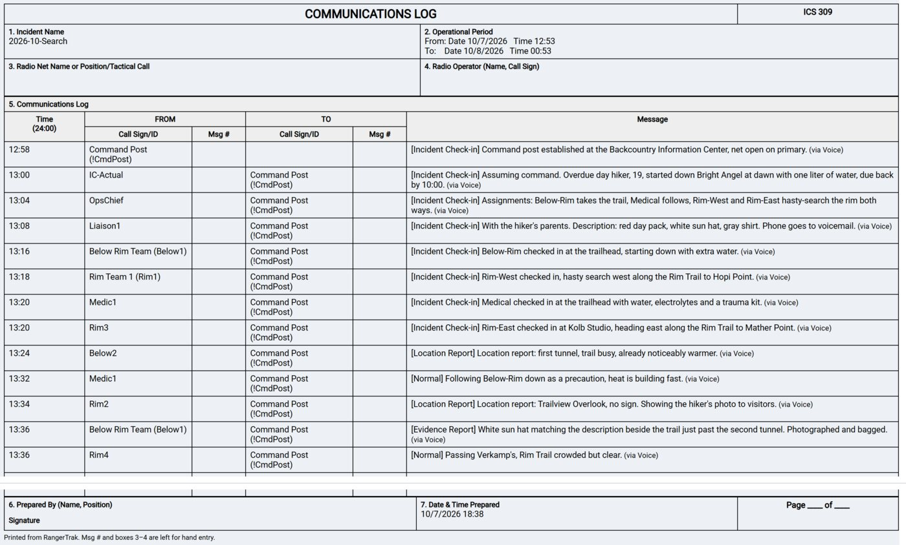
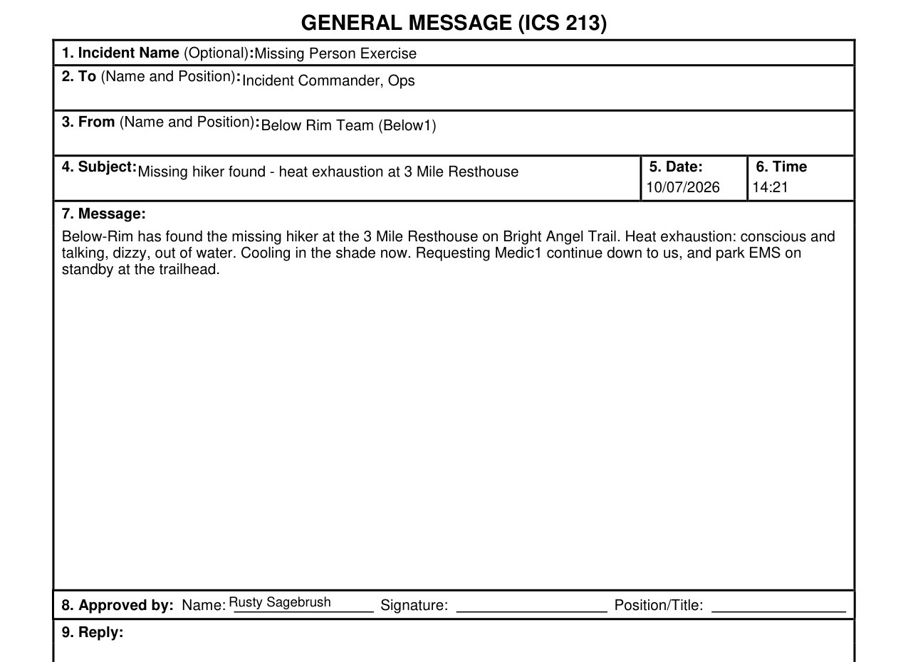

RangerTrak Field Guide
For scribes, net control and command-post staff who want the short version before an incident. This page summarizes the in-app Help and points you to it for the detail.
Last updated
- New to RangerTrak? Take the tour first. The RangerTrak Tour Guide is a set of hands-on modules you try in the app itself, one at a time. Start with Module 1, First look.
- The full reference is inside the app. The in-app Help ships with RangerTrak, so it always matches the version you’re running, and it works with no Internet. When this page and the app disagree, trust the app: rangertrak.org/help.
- Easy menus and Full menus. A new install shows the everyday controls. A few things on this page, such as the ICS-213 and ICS-213RR boxes, Print map, the alternative map, the ICS-214, device encryption and RangerView, show only in Full menus: press the Full menus button at the top of Entry, Map, Mission or Rangers & Teams. Anything your mission already uses shows in both. See Full menus.
What RangerTrak does

RangerTrak is a free, open-source browser app for logging radio check-ins at a CERT, ACS/ARES, SAR or wildland-fire command post. Each report records who, where, when and what, and shows up on a map.
It runs in the browser on one device. There is no server, no account, no login, and no API key for core use. Once a device is prepared, it works with no Internet.
It is built around three roles:
- The scribe or net control at the command post. This is the main user, and the app is built around their speed. You spend the incident on Entry, the home page. Click the RangerTrak name in the header to get back there.
- The field ranger or team. They never touch the app. They are a voice on the radio.
- The analyst or Incident Commander. They use the Radio Log and maps during the incident, and export afterwards.
The top menu has Entry, Map, Radio Log, Messages, Rangers, Mission, After action and Help. The Help button in the header opens help for the screen you are on, with a link to the full Help page.
You can enter locations as decimal degrees, degrees and decimal minutes, degrees-minutes-seconds, MGRS, UTM, Maidenhead or Plus Codes. All are calculated on the device.
The three ways RangerTrak starts

- Cold. First time on this device, with no Internet. Nothing loads. The app must be fetched once.
- Warm. You’ve opened it on this device before. The app loads offline. Map areas you happened to view are there; others are blank.
- Hot. Prepared on purpose. The app, roster, mission settings and map coverage are all on the device, and it works with no Internet.
Aim for hot. The next section shows how.
Caught cold
No preparation and no Internet? You have three ways out, best first:
- Find any connection, even a phone hotspot for a minute. Then do the setup steps straight away.
- Use a device that already has it. A warm device beats a faster one without the app.
- Restore someone’s backup file on a device that can load the app.
Once it’s running, capture first and tidy later. Coordinates and a call sign are enough for a report; addresses can wait.
Before the mission
Do this while you still have Internet. Help → Start here has the same checklist in more detail.
- Install the app from your browser. This makes the browser more likely to keep its data.
- Set up the mission. On Mission, enter the mission name, the operational period and a default location near your area. It saves as you go, like the Radio Log and Rangers grids.
- Load your roster on Rangers, straight from the Excel or CSV list you already keep. It shows what will change before it adds anything, and it never deletes anyone. Steps: Loading your roster.
- Get your maps. On Map, use “Save this area for offline use” for your operating area. Then switch to the alternative map once so its built-in world map downloads. The built-in map is low detail everywhere, apart from a demo mission’s own area while that demo is loaded. For street detail in your area, a coordinator can make a map file for your region: the steps are in Help → Your data, “Make a map file for your area”, and in the printed Field Guide. The Map page’s Help shows how to load it.
- Protect and back up. On Mission, let the browser protect storage if it offers to. Use “Back up mission” to save a file somewhere other than this device. Do both especially on iPhone and iPad, where every browser can clear a site’s data after about a week unused, and protection isn’t reliable. Installing the app helps there too.
- Test it. Turn on airplane mode and log a report.
The colored readiness dot in the app header tracks all of this. Hover or tap it to see what’s still missing. Each item links to its fix.
Restored the wrong file or imported the wrong roster? Mission → Data safety → Undo last import puts it back within 24 hours. Undoing a roster import restores only the roster and photos, never your log.
During the mission
You spend the mission on Entry: pick the ranger, set the location, choose a status, add notes and save. Each report is stored the moment you save it. The rest, in brief; each screen’s Help has the detail.
- Clues. Tick Include evidence/clue at a different location on Entry (or Alt+click the small map) to place a clue by distance and bearing from where the ranger stands. An optional heading, in degrees true, says which way the tracks or subject were going; it shows as an arrow at the clue on the map, and on the Radio Log, the 309 and the CSV.
- The Map page plots every report, with Ranger paths joining each ranger’s reports in order (faint for older, bright for newest). It has two engines: the default needs Internet except in areas you saved; the alternative works with none, at low detail outside your own map file. The layers box adds satellite, USGS photos, your places and a USNG/MGRS grid. The Show on map box under the map turns Ranger paths, a heat map and range rings on or off, and narrows the map to the latest report per ranger or to those needing attention; a strip along the top says what is hidden. The fullscreen button under the zoom buttons gives the map the whole screen, and that strip stays in view. On the default map, click or tap a report to see its notes (long ones fold to three lines, with More) and a 📎 count of its photos and files. Print map makes a one-page sheet; use it rather than the browser’s own Print.
- The Radio Log and Rangers tables work alike. When a column filter is on, a strip above the table names it, so nobody forgets rows are hidden; Show everything clears it. Export says how many rows it will save, and the printed 309 follows the filter. On the Radio Log, entries from the current op period get a colored edge and message number; tick Current op period above the log to see only those. Two rangers with the same ID or call sign are allowed, but show in red so a typo stands out.
- Reports from rangers’ own phones. A phone in field mode saves each report on the phone and never sends anything by itself. Send N new reports bundles the ones not sent yet into a Report Packet; the command post loads it on the Radio Log page. My reports marks each report Not sent, Sent or Received, and lets the ranger edit or delete one before it goes. After merging, the command post can Send a receipt (report numbers only, no text, names or places); opening it on the phone marks those reports Received, and Send again resends any still unconfirmed. The Online badge means only that the phone has a connection, so anything urgent still goes by radio.
- RangerView shows a read-only copy of the radio log and ICS-213 messages to the people you choose on the command post’s Wi-Fi, with a viewer password or phrase if you set one. It runs on a laptop from the RangerView download on the GitHub releases page: unzip it and double-click Start RangerView (Start RangerTrak Board in the beta.3 download). It needs Node.js 24 or newer and nothing else. If it won’t connect, Test connection on the Mission page names the likely cause.
- AAR/214, at the top of every page, takes a line for the debrief without leaving the page. Choose Mission (something to fix next time), RangerTrak (something about the app) or ICS-214 (a line for your activity log).
What needs Internet
| Works with no Internet | Needs Internet |
|---|---|
| Entering and saving reports | Looking up a street address |
| All coordinate formats and Plus Codes | Turning a location back into an address |
| The roster and the Radio Log | Map areas you haven’t saved or viewed |
| Export and import, backup and restore | Sending feedback |
| Map areas you saved or already viewed | |
| The alternative map, once it has downloaded |
Your data
Everything lives in this browser, on this device only. Nothing is uploaded. Each device has its own separate copy, so the device is the only copy. Back it up.
What keeps your data, and what loses it
Each report is saved the moment you enter it. It survives the device switching off or the battery going flat, closing the browser, restarting, losing Wi-Fi or mobile data, and a new version of RangerTrak.
What does lose it:
- Clearing the browser’s data for rangertrak.org, often bundled into “clear history”.
- A private or incognito window. Everything goes when it closes.
- A different browser or device. Each has its own copy (below).
- Uninstalling the app on iPhone, iPad and some Android devices.
- The browser running short of space, unless storage is protected (Mission → Data safety).
- iPhone, iPad and Safari on a Mac, which can clear a site’s data after about a week unused. Every browser on iPhone and iPad works this way. There, installing the app and backing up are the real protection.
Nobody else can recover lost data either. Back up regularly.
Who can see it
The roster holds legal names, personal phone numbers, photos and call signs. It is stored unencrypted on the device unless you turn on device encryption (Mission → Data safety), which asks for a passphrase each time the app opens. That protects a lost or stolen device, not an unlocked one.
- Mission backups can take an optional passphrase. Leave it blank and the file is plain. Type one and the file is encrypted. A forgotten passphrase can’t be recovered.
- Roster and spreadsheet exports are always plain files.
- Photos, video and audio attached to reports are confidential too.
An original keeps the camera’s hidden details, often the GPS position where it was
taken; a smaller copy drops them. Device encryption covers them, and a backup puts them
in a second file beside it (
...-attachments.zip), locked by the same passphrase.
Share files only with people who need them, and delete them after the mission. Details: Help → Your data.
One copy per browser
Each browser keeps its own copy of RangerTrak, and copies never talk to each other. A mission set up in Chrome isn’t there in Edge or Firefox, or on another laptop, and a report logged in one never appears in the other. To move a mission, use Back up mission on one and Restore mission on the other. When a second scribe already has entries of their own, use Hand over to another scribe on the Radio Log instead: the other device merges it in, and nothing there is replaced. A field phone’s reports reach the command post as a Report Packet file, and RangerView only shows the log and messages. None of these keeps two copies in sync.
Tabs, iPhone Home Screen, and running two missions at once
- One tab at a time. In one browser, only one tab or window of RangerTrak is active. Open a second and it says RangerTrak is already open, so two tabs can’t overwrite each other’s work.
- iPhone and iPad: the app added to the Home Screen keeps a separate copy from Safari’s. Set up the mission in the one you’ll use.
- Two missions at once? Run each in its own browser (say, Chrome for one and Edge or Firefox for the other) or its own browser profile. Each gets its own mission, roster and log. Give the two missions different names, and label the screens so nobody logs into the wrong one. Only one of them should send to a given RangerView: RangerView shows only the last log sent to it, so two would keep replacing each other. Don’t use a private or incognito window for real work: it’s erased when you close it.
On paper, and at a glance
Everything below prints from the device, with no Internet, on your own printer or to a PDF. Each printout carries the mission name, the RangerTrak version that made it, and an EXERCISE banner when the mission is an exercise or a demo. The pictures are from the built-in demo missions: the people are made up.






![A printed RangerTrak map sheet of Vashon Island from the Vashon demo. A title
box gives the mission, incident number, operational period and print time. The
legend lists each team and ranger with how many radio log entries are plotted
for them, the statuses, the grid and range rings, ranger paths, the overdue
shading bands and the named places. The map has a USNG grid, range rings around
the staging area, a north arrow, a scale bar and latitude/longitude ticks round
the edge, with a Prepared by line underneath.](img/guide/map-sheet-vashon.jpg)

Also on paper: a roster contact sheet by team (Print roster, on Rangers), a list of places with a small map (Print places, on Map), the AAR improvement-plan table, and the ICS-214 activity log on FEMA’s own form (Export ICS-214, on After action). The roster sheet carries names and phone numbers, so keep it safe.
After the mission
Print or export the SitRep for the debrief: it isn’t saved on the device. On After action, give each note an owner (and, if you like, a capability element: Planning, Organization, Equipment, Training or Exercise, as FEMA’s HSEEP uses) and print the improvement-plan table, modeled on HSEEP’s, and use Export ICS-214 for your activity log. Then back up. Clearing can’t be undone.
Loading a demo, starting a real mission and deleting the radio log each show the same What to clear list before anything goes. It shows what will be removed, lets you keep your After Action notes and ICS-214 lines, and has a Back up mission first button. During a live mission you also type the mission name to confirm.
You can keep the roster for next time. If the device is being handed to another group, clear the roster too: it holds your people’s personal details. Details: Help → After mission.
The app also keeps a journal of what was done to the mission’s data on this device: loading a demo, restoring, importing, backing up, exporting, printing, clearing. Clearing doesn’t erase it. It’s on the Log page, which says whether it is intact, and its newest short code is printed on the radio log, the SitRep and the map sheet.
Try it with demo data
While the device is empty or holds only demo data, Entry shows a demo card with “Load a demo”: Grand Canyon South Rim (the default), Vashon Island, a state fair, or one of two large ones. Pick one and it loads. Help → Start here has the same button.
Every demo files a few ICS-213 messages and ICS-213RR resource requests, so Messages has something to print. The two large demos show how the map and Radio Log cope with a busy mission. Montecito has about 400 reports, 30 teams and 100 people, modeled on the January 2018 debris flows in California. Oso has about 510 reports (51 of them ICS-213 messages and 3 resource requests), 40 teams and a command post on each side of the slide, modeled on the March 2014 landslide in Washington. Every person, team and message is invented.
Loading a demo replaces what’s on the device, through the same What to clear list. Back up real data first.
Rather be led through it? The RangerTrak Tour Guide gives you a situation, a goal and a few short tests per module, from your first radio call (Module 2) to running the net with the Internet down (Module 6).
Where to find more
- The RangerTrak Tour Guide, the best place to start: hands-on modules, one at a time.
- The in-app Help at rangertrak.org/help. Its sections are Start here, FAQ, After mission, Your data, About and Contact us, and one search box finds an answer across all of them, offline.
- The Help button at the top right of each screen, for that screen.
- The printed Field Guide, for coordinators who want everything on paper, including how to make a map file for your own area.
- The Field Notes blog, which walks through the app one piece at a time.
- Feedback through Help → Contact us, or the feedback form on this site.
Is this page too long, too short, or missing what you needed? We’re asking scribes and coordinators. Tell us.